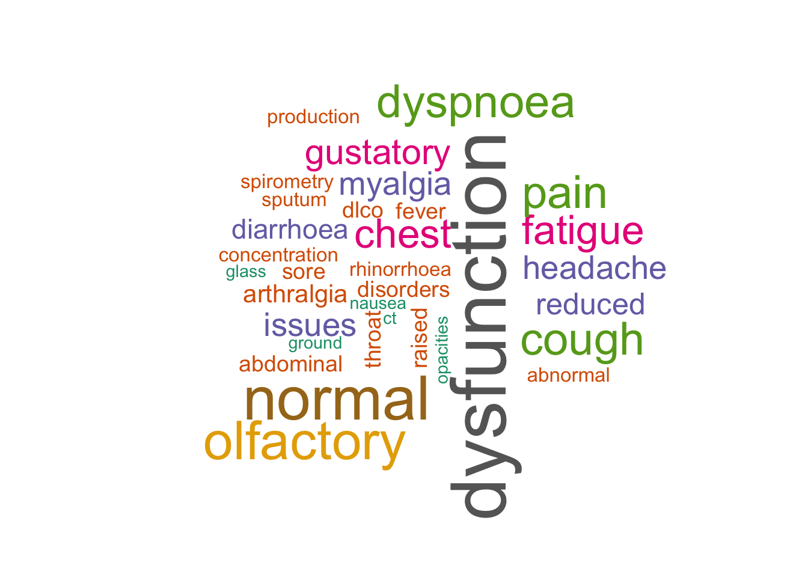

Background
This was another update on the current long COVID climate around the world that I thought to follow up from my earlier work (details in the SQL and Tableau projects). This time the dataset was obtained from another journal paper, which had data collected till July 2021 (the previous paper was only until March 2021). I’ve used Python to extract a table from the PDF of the paper and also Excel to assist with data cleaning. This was followed by using R to analyse and visualise all the data.
Source of dataset
Thank you to the authors of this paper: Healey Q, Sheikh A, Daines L, Vasileiou E. Symptoms and signs of long COVID: A rapid review and meta-analysis. J Glob Health 2022;12:05014. Creative Commons Attribution 4.0 International Public License
Before we begin, let’s load all the required libraries. If you can’t find any of the listed libraries by any means, consider trying to install them first via install.packages(), with the names of the desired libraries typed within the bracket, then load as shown.
library(tidyverse)
library(tidytext)
library(wordcloud)
library(RColorBrewer)
library(ggplot2)
library(knitr)Data scraping from PDF
The dataset was scraped from a PDF obtained via PubMed (journal paper source as shown above) by using tabula-py (for details please see this post). Unfortunately I had trouble installing a similar R package remotely after being archived (tabulizer with known issues in its GitHub repository) so I trialled tabula-py instead. tabula-py was a Python wrapper for tabula-java and it worked for scraping all the data from the target table, but the downside was that the scraped data did not inherit the original tabular format on PDF, with columns and rows all jumbled. One possible reason could be that the table I was intending to scrape had merged rows, which were known to cause scraping issues. I’ve also noticed other more successful examples were from tables that had well-defined columns and rows i.e. no merged rows or columns. The end result in these cases often ended up looking more like the original source tables.
So in short, the final scraped table was cleaned in Excel and saved as .csv file, and then imported as shown below.
df <- read_csv("Full_table.csv")New names:
Rows: 75 Columns: 9
── Column specification
──────────────────────────────────────────────────────── Delimiter: "," chr
(5): Author (country), Hospital (%) {ICU (%)}, Comorbidities, Body syste... dbl
(2): Age (years), Follow-up time (days) lgl (2): ...8, ...9
ℹ Use `spec()` to retrieve the full column specification for this data. ℹ
Specify the column types or set `show_col_types = FALSE` to quiet this message.
• `` -> `...8`
• `` -> `...9`Data inspection and wrangling
Here’s a quick overview on the hospitalisation rates across all the studies from this paper.
df_hosp <- df %>%
select(`Author (country)`, `Hospital (%) {ICU (%)}`)
df_hosp# A tibble: 75 × 2
`Author (country)` `Hospital (%) {ICU (%)}`
<chr> <chr>
1 Bellan (Italy) 100 {12}
2 Bellan (Italy) <NA>
3 Bellan (Italy) <NA>
4 Bellan (Italy) <NA>
5 Bellan (Italy) <NA>
6 Bliddal (Denmark) 0
7 Bliddal (Denmark) <NA>
8 Bliddal (Denmark) <NA>
9 Bliddal (Denmark) <NA>
10 Bliddal (Denmark) <NA>
# … with 65 more rows
# ℹ Use `print(n = ...)` to see more rowsSeparating columns and change column type
The table column of Hospital (%) {ICU (%)} was separated into two separate columns to allow clearer differentiation between hospital and ICU rates within each study. The data type for Hospital (%) column was also changed from character to numeric so we can plot a bar graph later on (otherwise the x-axis may not be properly shown).
df_hosp_icu <- df_hosp %>%
separate(`Hospital (%) {ICU (%)}`, c("Hospital (%)", "ICU (%)"))%>%
mutate(across(`Hospital (%)`, as.numeric))Warning: Expected 2 pieces. Additional pieces discarded in 5 rows [1, 21, 23,
29, 45].Warning: Expected 2 pieces. Missing pieces filled with `NA` in 12 rows [6, 13,
14, 25, 33, 34, 39, 55, 56, 62, 69, 75].Warning in mask$eval_all_mutate(quo): NAs introduced by coerciondf_hosp_icu# A tibble: 75 × 3
`Author (country)` `Hospital (%)` `ICU (%)`
<chr> <dbl> <chr>
1 Bellan (Italy) 100 12
2 Bellan (Italy) NA <NA>
3 Bellan (Italy) NA <NA>
4 Bellan (Italy) NA <NA>
5 Bellan (Italy) NA <NA>
6 Bliddal (Denmark) 0 <NA>
7 Bliddal (Denmark) NA <NA>
8 Bliddal (Denmark) NA <NA>
9 Bliddal (Denmark) NA <NA>
10 Bliddal (Denmark) NA <NA>
# … with 65 more rows
# ℹ Use `print(n = ...)` to see more rowsBar graph for hospitalisation rate
Then a line of code to filter out the results of “NA” under the column of Hospital (%) was added. Most of the cells with “NA” were there to fill the multiple empty row entries for other variables and not for the Hospital (%) column, therefore these “NA”s were removed in this instance. The horizontal bar graph below shows the COVID-19 hospitalisation rate for studies in different countries, presenting a very diverse results of 0% to 100% hospitalisations across all studies.
df_hosp_icu %>%
filter(!is.na(`Hospital (%)`)) %>% # Same effect will still be achieved without this line of code with a warning message of "Removed 58 rows containing missing values (position_stack)" shown
ggplot(aes(x = `Author (country)`, y = `Hospital (%)`)) +
geom_bar(stat = "identity") +
coord_flip()
Note: two of the studies were removed from the above, these studies were Chiesa-Estomba (Italy) and Mahmud (Bangladesh), which had “Not stated” recorded under Hospital (%) {ICU (%)} column. When the Hospital (%) column was converted from character to numeric, these two rows were converted to “NA” automatically. In total, there were 19 cohort studies as mentioned by the paper.
Separating rows
The following shows separating the listed co-morbidities for each study into separate rows, since separating into columns would in fact make the table looking even more complex by adding way too much columns, adding difficulties in data reading.
df_new <- df %>%
separate_rows(Comorbidities, sep = ", ")
df_new# A tibble: 178 × 9
Author (country…¹ Hospi…² Age …³ Comor…⁴ Follo…⁵ Body …⁶ Results ...8 ...9
<chr> <chr> <dbl> <chr> <dbl> <chr> <chr> <lgl> <lgl>
1 Bellan (Italy) 100 {1… 61 "41% h… 107 Genera… 5.9% m… NA NA
2 Bellan (Italy) 100 {1… 61 "15% d… 107 Genera… 5.9% m… NA NA
3 Bellan (Italy) 100 {1… 61 "11% o… 107 Genera… 5.9% m… NA NA
4 Bellan (Italy) 100 {1… 61 "11% e… 107 Genera… 5.9% m… NA NA
5 Bellan (Italy) 100 {1… 61 "10% m… 107 Genera… 5.9% m… NA NA
6 Bellan (Italy) 100 {1… 61 "9% IH… 107 Genera… 5.9% m… NA NA
7 Bellan (Italy) 100 {1… 61 " 8% d… 107 Genera… 5.9% m… NA NA
8 Bellan (Italy) 100 {1… 61 "7% AF" 107 Genera… 5.9% m… NA NA
9 Bellan (Italy) 100 {1… 61 "6% CO… 107 Genera… 5.9% m… NA NA
10 Bellan (Italy) 100 {1… 61 " 6% C… 107 Genera… 5.9% m… NA NA
# … with 168 more rows, and abbreviated variable names ¹`Author (country)`,
# ²`Hospital (%) {ICU (%)}`, ³`Age (years)`, ⁴Comorbidities,
# ⁵`Follow-up time (days)`, ⁶`Body system`
# ℹ Use `print(n = ...)` to see more rowsTypes of comorbidities present in long COVID - a frequency count
I have noticed how the comorbidities for each studies were listed with different percentages and thought if we could just gather a very initial idea about what sort of comorbidities were present, then it would give a quick overall picture. So I started by removing these digits and percentage symbols. Obviously since I’m newish to R (two months into using it), I soon ran into a problem, I kept on getting stuck with not having the count() function to actually count unique elements under the column of co-morbidities.
If you look at the magnified circle, as one of the examples, in the column on the right in the image below, you’ll notice the subtle difference in spacing, so yes the culprit was the space1 and once it was removed, count() worked nicely as how it should be. One small downside was that it would also remove the space between the co-morbidity terms e.g. “liver disease” became “liverdisease”, but since it achieved the aim intended to do a good count on all the co-morbidities, I left it as it was.

df_new %>%
mutate(Comorbidities = str_remove_all(Comorbidities, "[:digit:]|[%]|[ ]")) %>% # Remove % symbol, numbers and don't forget to remove spaces as well in the column!
filter(!is.na(Comorbidities)) %>% # Add this line to filter out all the "NA"s
count(Comorbidities, sort = TRUE) # Count the comorbidities in descending order# A tibble: 37 × 2
Comorbidities n
<chr> <int>
1 diabetes 14
2 hypertension 13
3 IHD 10
4 asthma 9
5 COPD 9
6 obesity 9
7 CKD 6
8 malignancy 5
9 dyslipidaemia 4
10 liverdisease 4
# … with 27 more rows
# ℹ Use `print(n = ...)` to see more rowsNow we can observe the top 3 frequency of all co-morbidities listed were diabetes, hypertension and IHD2. These were followed by, unsurprisingly, common respiratory illnesses such as asthma, COPD3, then obesity, and also CKD4, malignancy, dyslipidaemia and so on. These would be considered as high risk factors for ending up with long COVID symptoms if someone had caught the COVID-19 infection in the first place.
df_new_a <- df %>%
separate_rows(Results, sep = ", ") %>%
select(`Author (country)`, `Body system`, Results)
kable(df_new_a)| Author (country) | Body system | Results |
|---|---|---|
| Bellan (Italy) | Generalised/MSK | 5.9% myalgia |
| Bellan (Italy) | Generalised/MSK | 5.9% arthralgia |
| Bellan (Italy) | Respiratory | 5.5% dyspnoea |
| Bellan (Italy) | Respiratory | 2.5% cough |
| Bellan (Italy) | Respiratory | 0.4% chest pain |
| Bellan (Italy) | Respiratory | 51.6% reduced DLCO |
| Bellan (Italy) | Respiratory | normal spirometry |
| Bellan (Italy) | Neuropsychiatric | 43% PTSD symptoms |
| Bellan (Italy) | ENT | 5% gustatory dysfunction |
| Bellan (Italy) | ENT | 4.6% olfactory dysfunction |
| Bellan (Italy) | Gastrointestinal | 1.3% diarrhoea |
| Bliddal (Denmark) | Generalised/MSK | Fatigue |
| Bliddal (Denmark) | Generalised/MSK | myalgia |
| Bliddal (Denmark) | Generalised/MSK | arthralgia |
| Bliddal (Denmark) | Generalised/MSK | chills |
| Bliddal (Denmark) | Generalised/MSK | fever |
| Bliddal (Denmark) | Respiratory | Dyspnoea |
| Bliddal (Denmark) | Respiratory | cough |
| Bliddal (Denmark) | Respiratory | chest pain |
| Bliddal (Denmark) | Respiratory | sputum production |
| Bliddal (Denmark) | Neuropsychiatric | Memory issues |
| Bliddal (Denmark) | Neuropsychiatric | concentration issues |
| Bliddal (Denmark) | Neuropsychiatric | headache |
| Bliddal (Denmark) | ENT | Olfactory dysfunction |
| Bliddal (Denmark) | ENT | gustatory dysfunction |
| Bliddal (Denmark) | ENT | sore throat |
| Bliddal (Denmark) | ENT | rhinorrhoea |
| Bliddal (Denmark) | ENT | sneezing |
| Bliddal (Denmark) | Gastrointestinal | Diarrhoea |
| Bliddal (Denmark) | Gastrointestinal | anorexia |
| Bliddal (Denmark) | Gastrointestinal | abdominal pain |
| Bliddal (Denmark) | Gastrointestinal | nausea |
| Bliddal (Denmark) | Others | Red runny eyes |
| Chiesa-Estomba (Italy) | ENT | 51% olfactory dysfunction |
| Cousyn (France) | ENT | 16.8% olfactory dysfunction |
| Cousyn (France) | ENT | 9.6% gustatory dysfunction |
| Daher (Germany) | Generalised/MSK | 45% fatigue |
| Daher (Germany) | Generalised/MSK | 15% myalgia |
| Daher (Germany) | Generalised/MSK | 3% fever |
| Daher (Germany) | Generalised/MSK | slight pain/discomfort |
| Daher (Germany) | Respiratory | 33% dyspnoea |
| Daher (Germany) | Respiratory | 33% cough. Normal spirometry |
| Daher (Germany) | Respiratory | normal ABG |
| Daher (Germany) | Respiratory | reduced DLCO |
| Daher (Germany) | Respiratory | reduced distance on 6MWT |
| Daher (Germany) | Neuropsychiatric | 18% cognitive issues |
| Daher (Germany) | Neuropsychiatric | 15% headache |
| Daher (Germany) | Neuropsychiatric | mild depression |
| Daher (Germany) | Neuropsychiatric | subthreshold anxiety |
| Daher (Germany) | ENT | 12% olfactory dysfunction |
| Daher (Germany) | ENT | 12% rhinorrhoea |
| Daher (Germany) | ENT | 9% gustatory dysfunction |
| Daher (Germany) | ENT | 9% sore throat |
| Daher (Germany) | Gastrointestinal | 9% diarrhoea |
| Daher (Germany) | Gastrointestinal | 6% nausea |
| Daher (Germany) | Gastrointestinal | 3% abdominal pain |
| Daher (Germany) | Gastrointestinal | normal LFTs |
| Daher (Germany) | Cardiovascular | 18% angina |
| Daher (Germany) | Cardiovascular | normal left ventricular function |
| Daher (Germany) | Cardiovascular | normal right ventricular function |
| Daher (Germany) | Cardiovascular | normal cardiac biomarkers |
| Daher (Germany) | Other biomarkers | Normal FBC |
| Daher (Germany) | Other biomarkers | normal coagulation screen |
| Daher (Germany) | Other biomarkers | raised ferritin |
| Daher (Germany) | Other biomarkers | potentially raised D-dimer |
| Daher (Germany) | Other biomarkers | normal U&Es |
| Daher (Germany) | Other biomarkers | normal CRP |
| Daher (Germany) | Other biomarkers | normal procalcitonin |
| Daher (Germany) | Other biomarkers | normal TFTs |
| Daher (Germany) | Other biomarkers | normal IL-6 |
| Fernandez-de-Las-Penas (Spain) | Generalised/MSK | 61.2% fatigue |
| Fernandez-de-Las-Penas (Spain) | Respiratory | 23.3% dyspnoea |
| Fernandez-de-Las-Penas (Spain) | Respiratory | 6.5% chest pain |
| Fernandez-de-Las-Penas (Spain) | Respiratory | 2.5% cough |
| Froidure (Belgium) | Generalised/MSK | 25% fatigue |
| Froidure (Belgium) | Respiratory | Abnormal chest CT: 67% ground glass opacities |
| Froidure (Belgium) | Respiratory | 44% reticulations |
| Froidure (Belgium) | Respiratory | 20% fibrotic lesions/traction bronchiectasis |
| Froidure (Belgium) | Respiratory | 7% consolidations. 46% reduced DLCO |
| Froidure (Belgium) | Respiratory | 35% dyspnoea |
| Froidure (Belgium) | Respiratory | 10% dry cough |
| Froidure (Belgium) | Respiratory | 4% chest tightness |
| Froidure (Belgium) | Respiratory | normal spirometry |
| Gerhards (Germany) | Generalised/MSK | 17% fatigue |
| Gerhards (Germany) | Neuropsychiatric | Depression |
| Gerhards (Germany) | Neuropsychiatric | concentration issues |
| Gerhards (Germany) | ENT | 27% olfactory/gustatory dysfunction |
| Gerhards (Germany) | Others | Alopecia |
| Ghosn (France) | Generalised/MSK | Fatigue |
| Ghosn (France) | Generalised/MSK | arthralgia |
| Ghosn (France) | Generalised/MSK | myalgia |
| Ghosn (France) | Respiratory | Dyspnoea |
| Ghosn (France) | Respiratory | cough |
| Ghosn (France) | Neuropsychiatric | Headache |
| Ghosn (France) | ENT | Rhinorrhoea |
| Ghosn (France) | ENT | olfactory dysfunction |
| Ghosn (France) | ENT | gustatory dysfunction |
| Ghosn (France) | ENT | sore throat |
| Han (China) | Respiratory | 62% abnormal chest CT: 35% fibrotic-like changes |
| Han (China) | Respiratory | 27% ground glass opacities/interstitial thickening |
| Han (China) | Respiratory | nodules/masses |
| Han (China) | Respiratory | interlobar pleural traction |
| Han (China) | Respiratory | pulmonary atelectasis and bronchiectasis. 26% reduced DLCO |
| Han (China) | Respiratory | 14% mild dyspnoea |
| Han (China) | Respiratory | 10% sputum production |
| Han (China) | Respiratory | 6.1% dry cough |
| Holmes (Australia) | Generalised/MSK | 50% fatigue |
| Holmes (Australia) | Generalised/MSK | 35.7% arthralgia |
| Holmes (Australia) | Generalised/MSK | 21.4% myalgia |
| Holmes (Australia) | Respiratory | 28.6% cough |
| Holmes (Australia) | Respiratory | 25% dyspnoea |
| Holmes (Australia) | Respiratory | 3.6% chest pain |
| Holmes (Australia) | Neuropsychiatric | 10.7% headache |
| Holmes (Australia) | ENT | 28.6% olfactory dysfunction |
| Holmes (Australia) | ENT | 14.3% rhinorrhoea |
| Holmes (Australia) | Gastrointestinal | No abdominal pain |
| Jacobs (USA) | Generalised/MSK | 44.8% fatigue |
| Jacobs (USA) | Generalised/MSK | 21.3% myalgia |
| Jacobs (USA) | Generalised/MSK | 15.8% arthralgia |
| Jacobs (USA) | Generalised/MSK | 1.1% fever |
| Jacobs (USA) | Generalised/MSK | 1.1% ulcer |
| Jacobs (USA) | Respiratory | 31.7% dyspnoea |
| Jacobs (USA) | Respiratory | 25.1% cough |
| Jacobs (USA) | Respiratory | 14.8% sputum production |
| Jacobs (USA) | Neuropsychiatric | 12.6% headache |
| Jacobs (USA) | Neuropsychiatric | 8.7% cognitive issues |
| Jacobs (USA) | ENT | 9.8% gustatory dysfunction |
| Jacobs (USA) | ENT | 9.3% olfactory dysfunction |
| Jacobs (USA) | Gastrointestinal | 3.8% diarrhoea |
| Jacobs (USA) | Others | 8.2% eye irritation |
| Jacobs (USA) | Others | 1.1% ulcer |
| Leth (Denmark) | Generalised/MSK | 63% fatigue |
| Leth (Denmark) | Generalised/MSK | 35% myalgia |
| Leth (Denmark) | Respiratory | 53% dyspnoea |
| Leth (Denmark) | Respiratory | 24% cough |
| Leth (Denmark) | Respiratory | 20% chest pain |
| Leth (Denmark) | Respiratory | 12% sputum production |
| Leth (Denmark) | Neuropsychiatric | 45% concentration issues |
| Leth (Denmark) | Neuropsychiatric | 27% headache |
| Leth (Denmark) | Neuropsychiatric | 27% paraesthesia |
| Leth (Denmark) | ENT | 31% gustatory dysfunction |
| Leth (Denmark) | ENT | 27% olfactory dysfunction |
| Leth (Denmark) | ENT | 10% sore throat |
| Leth (Denmark) | Gastrointestinal | 10% abdominal pain |
| Leth (Denmark) | Gastrointestinal | 8% diarrhoea |
| Leth (Denmark) | Gastrointestinal | 8% nausea |
| Leth (Denmark) | Gastrointestinal | 4% anorexia |
| Mahmud (Bangladesh) | Generalised/MSK | 33% fatigue |
| Mahmud (Bangladesh) | Generalised/MSK | 1.4% arthralgia |
| Mahmud (Bangladesh) | Generalised/MSK | 0.6% myalgia |
| Mahmud (Bangladesh) | Respiratory | 8.5% cough |
| Mahmud (Bangladesh) | Respiratory | 7% dyspnoea |
| Mahmud (Bangladesh) | Respiratory | 0.8% chest pain |
| Mahmud (Bangladesh) | Neuropsychiatric | 3.9% circadian rhythm disorders |
| Mahmud (Bangladesh) | Neuropsychiatric | 3.4% headache |
| Mahmud (Bangladesh) | Neuropsychiatric | 2.3% sleep disturbance |
| Mahmud (Bangladesh) | Neuropsychiatric | 1.4% adjustment disorder |
| Mahmud (Bangladesh) | ENT | 2.3% vertigo |
| Mahmud (Bangladesh) | ENT | 2% olfactory dysfunction |
| Mahmud (Bangladesh) | Cardiovascular | 1.4% palpitation |
| Otte (Germany) | ENT | 42.3% subjective olfactory dysfunction |
| Otte (Germany) | ENT | 26.9% objective olfactory dysfunction (discrimination and identification issues) |
| Peghin (Italy) | Generalised/MSK | 13.1% fatigue |
| Peghin (Italy) | Generalised/MSK | 8.2% rheumatological issues |
| Peghin (Italy) | Respiratory | 6% dyspnoea |
| Peghin (Italy) | Respiratory | 2% cough |
| Peghin (Italy) | Respiratory | 0.8% chest pain |
| Peghin (Italy) | Neuropsychiatric | 9.6% neurological disorders |
| Peghin (Italy) | Neuropsychiatric | 4.9% psychiatric disorders |
| Peghin (Italy) | Neuropsychiatric | 2.7% headache |
| Peghin (Italy) | ENT | 10.4% olfactory/gustatory dysfunction, |
| Peghin (Italy) | Gastrointestinal | 1.5% gastrointestinal disorders |
| Peghin (Italy) | Others | 3.7% alopecia |
| Peghin (Italy) | Others | 3.4% cutaneous manifestations |
| Peghin (Italy) | Others | 0.3% ocular symptoms |
| Sonnweber (Austria) | Generalised/MSK | 24% night sweats |
| Sonnweber (Austria) | Generalised/MSK | 0% fever |
| Sonnweber (Austria) | Respiratory | 63% abnormal chest CT: ground-glass opacities |
| Sonnweber (Austria) | Respiratory | reticular lesions |
| Sonnweber (Austria) | Respiratory | consolidations |
| Sonnweber (Austria) | Respiratory | bronchial dilation. 36% dyspnoea |
| Sonnweber (Austria) | Respiratory | abnormal spirometry: 22% reduced FVC |
| Sonnweber (Austria) | Respiratory | 22% reduced FEV1 |
| Sonnweber (Austria) | Respiratory | normal FEV1/FVC. 21% reduced DLCO |
| Sonnweber (Austria) | Respiratory | 17% cough |
| Sonnweber (Austria) | Neuropsychiatric | 22% sleep disorders |
| Sonnweber (Austria) | ENT | 19% olfactory dysfunction |
| Sonnweber (Austria) | Gastrointestinal | 9% diarrhoea/vomiting |
| Sonnweber (Austria) | Cardiovascular | 97% normal LVEF |
| Sonnweber (Austria) | Cardiovascular | 55% diastolic dysfunction on echo |
| Sonnweber (Austria) | Cardiovascular | 23% raised NT-proBNP |
| Sonnweber (Austria) | Cardiovascular | 10% pulmonary hypertension |
| Sonnweber (Austria) | Cardiovascular | 1% pericardial effusion |
| Sonnweber (Austria) | Other biomarkers | Raised D-dimer |
| Sonnweber (Austria) | Other biomarkers | potentially raised ferritin |
| Sonnweber (Austria) | Other biomarkers | normal CRP |
| Sonnweber (Austria) | Other biomarkers | normal procalcitonin |
| Sonnweber (Austria) | Other biomarkers | normal IL-6 |
| Sudre (UK, USA, Sweden) | Generalised/MSK | Fatigue |
| Sudre (UK, USA, Sweden) | Generalised/MSK | myalgia |
| Sudre (UK, USA, Sweden) | Generalised/MSK | fever |
| Sudre (UK, USA, Sweden) | Respiratory | Dyspnoea |
| Sudre (UK, USA, Sweden) | Respiratory | cough |
| Sudre (UK, USA, Sweden) | Respiratory | chest pain |
| Sudre (UK, USA, Sweden) | Neuropsychiatric | Headache |
| Sudre (UK, USA, Sweden) | Neuropsychiatric | paraesthesia |
| Sudre (UK, USA, Sweden) | Neuropsychiatric | numbness |
| Sudre (UK, USA, Sweden) | Neuropsychiatric | concentration/ memory issues |
| Sudre (UK, USA, Sweden) | ENT | Olfactory dysfunction |
| Sudre (UK, USA, Sweden) | ENT | sore throat |
| Sudre (UK, USA, Sweden) | ENT | hoarse voice |
| Sudre (UK, USA, Sweden) | ENT | tinnitus |
| Sudre (UK, USA, Sweden) | ENT | earache |
| Sudre (UK, USA, Sweden) | Gastrointestinal | Diarrhoea |
| Sudre (UK, USA, Sweden) | Gastrointestinal | abdominal pain |
| Sudre (UK, USA, Sweden) | Cardiovascular | Palpitations/tachycardia |
| Vaira (Italy) | ENT | 21% olfactory dysfunction |
| Vaira (Italy) | ENT | 7.9% gustatory dysfunction |
# Chloropleth graph - MAPText mining to reveal the results
When skimming through the Results column, it appears some of the terms recorded are repetitive, I thought it may be quite interesting (in a less formal way) to do a wordcloud to see if it highlights any particular terms that would jump out from this meta-analysis about long COVID, which in a way may paint us a picture about how long COVID syndrome looked like for some of the sufferers.
# Pick out the results column
text <- df$Results
# Remove numbers from the texts so that the digits won't appear in the wordcloud
text1 <- str_replace_all(text, "[:digit:]", "")
text1 [1] ".% myalgia, .% arthralgia"
[2] ".% dyspnoea, .% cough, .% chest pain, .% reduced DLCO, normal spirometry"
[3] "% PTSD symptoms"
[4] "% gustatory dysfunction, .% olfactory dysfunction"
[5] ".% diarrhoea"
[6] "Fatigue, myalgia, arthralgia, chills, fever"
[7] "Dyspnoea, cough, chest pain, sputum production"
[8] "Memory issues, concentration issues, headache"
[9] "Olfactory dysfunction, gustatory dysfunction, sore throat, rhinorrhoea, sneezing"
[10] "Diarrhoea, anorexia, abdominal pain, nausea"
[11] "Red runny eyes"
[12] "% olfactory dysfunction"
[13] ".% olfactory dysfunction, .% gustatory dysfunction"
[14] "% fatigue, % myalgia, % fever, slight pain/discomfort"
[15] "% dyspnoea, % cough. Normal spirometry, normal ABG, reduced DLCO, reduced distance on MWT"
[16] "% cognitive issues, % headache, mild depression, subthreshold anxiety"
[17] "% olfactory dysfunction, % rhinorrhoea, % gustatory dysfunction, % sore throat"
[18] "% diarrhoea, % nausea, % abdominal pain, normal LFTs"
[19] "% angina, normal left ventricular function, normal right ventricular function, normal cardiac biomarkers"
[20] "Normal FBC, normal coagulation screen, raised ferritin, potentially raised D-dimer, normal U&Es, normal CRP, normal procalcitonin, normal TFTs, normal IL-"
[21] ".% fatigue"
[22] ".% dyspnoea, .% chest pain, .% cough"
[23] "% fatigue"
[24] "Abnormal chest CT: % ground glass opacities, % reticulations, % fibrotic lesions/traction bronchiectasis, % consolidations. % reduced DLCO, % dyspnoea, % dry cough, % chest tightness, normal spirometry"
[25] "% fatigue"
[26] "Depression, concentration issues"
[27] "% olfactory/gustatory dysfunction"
[28] "Alopecia"
[29] "Fatigue, arthralgia, myalgia"
[30] "Dyspnoea, cough"
[31] "Headache"
[32] "Rhinorrhoea, olfactory dysfunction, gustatory dysfunction, sore throat"
[33] "% abnormal chest CT: % fibrotic-like changes, % ground glass opacities/interstitial thickening, nodules/masses, interlobar pleural traction, pulmonary atelectasis and bronchiectasis. % reduced DLCO, % mild dyspnoea, % sputum production, .% dry cough"
[34] "% fatigue, .% arthralgia, .% myalgia"
[35] ".% cough, % dyspnoea, .% chest pain"
[36] ".% headache"
[37] ".% olfactory dysfunction, .% rhinorrhoea"
[38] "No abdominal pain"
[39] ".% fatigue, .% myalgia, .% arthralgia, .% fever, .% ulcer"
[40] ".% dyspnoea, .% cough, .% sputum production"
[41] ".% headache, .% cognitive issues"
[42] ".% gustatory dysfunction, .% olfactory dysfunction"
[43] ".% diarrhoea"
[44] ".% eye irritation, .% ulcer"
[45] "% fatigue, % myalgia"
[46] "% dyspnoea, % cough, % chest pain, % sputum production"
[47] "% concentration issues, % headache, % paraesthesia"
[48] "% gustatory dysfunction, % olfactory dysfunction, % sore throat"
[49] "% abdominal pain, % diarrhoea, % nausea, % anorexia"
[50] "% fatigue, .% arthralgia, .% myalgia"
[51] ".% cough, % dyspnoea, .% chest pain"
[52] ".% circadian rhythm disorders, .% headache, .% sleep disturbance, .% adjustment disorder"
[53] ".% vertigo, % olfactory dysfunction"
[54] ".% palpitation"
[55] ".% subjective olfactory dysfunction, .% objective olfactory dysfunction (discrimination and identification issues)"
[56] ".% fatigue, .% rheumatological issues"
[57] "% dyspnoea, % cough, .% chest pain"
[58] ".% neurological disorders, .% psychiatric disorders, .% headache"
[59] ".% olfactory/gustatory dysfunction,"
[60] ".% gastrointestinal disorders"
[61] ".% alopecia, .% cutaneous manifestations, .% ocular symptoms"
[62] "% night sweats, % fever"
[63] "% abnormal chest CT: ground-glass opacities, reticular lesions, consolidations, bronchial dilation. % dyspnoea, abnormal spirometry: % reduced FVC, % reduced FEV, normal FEV/FVC. % reduced DLCO, % cough"
[64] "% sleep disorders"
[65] "% olfactory dysfunction"
[66] "% diarrhoea/vomiting"
[67] "% normal LVEF, % diastolic dysfunction on echo, % raised NT-proBNP, % pulmonary hypertension, % pericardial effusion"
[68] "Raised D-dimer, potentially raised ferritin, normal CRP, normal procalcitonin, normal IL-"
[69] "Fatigue, myalgia, fever"
[70] "Dyspnoea, cough, chest pain"
[71] "Headache, paraesthesia, numbness, concentration/ memory issues"
[72] "Olfactory dysfunction, sore throat, hoarse voice, tinnitus, earache"
[73] "Diarrhoea, abdominal pain"
[74] "Palpitations/tachycardia"
[75] "% olfactory dysfunction, .% gustatory dysfunction" library(dplyr)
text_df <- tibble(line = 1:75, text = text1)
text_df# A tibble: 75 × 2
line text
<int> <chr>
1 1 .% myalgia, .% arthralgia
2 2 .% dyspnoea, .% cough, .% chest pain, .% reduced DLCO, normal spiromet…
3 3 % PTSD symptoms
4 4 % gustatory dysfunction, .% olfactory dysfunction
5 5 .% diarrhoea
6 6 Fatigue, myalgia, arthralgia, chills, fever
7 7 Dyspnoea, cough, chest pain, sputum production
8 8 Memory issues, concentration issues, headache
9 9 Olfactory dysfunction, gustatory dysfunction, sore throat, rhinorrhoea…
10 10 Diarrhoea, anorexia, abdominal pain, nausea
# … with 65 more rows
# ℹ Use `print(n = ...)` to see more rowsImport tidytext library and tokenise the texts in the selected column.
library(tidytext)
text_df1 <- text_df %>%
unnest_tokens(word, text)
text_df1# A tibble: 399 × 2
line word
<int> <chr>
1 1 myalgia
2 1 arthralgia
3 2 dyspnoea
4 2 cough
5 2 chest
6 2 pain
7 2 reduced
8 2 dlco
9 2 normal
10 2 spirometry
# … with 389 more rows
# ℹ Use `print(n = ...)` to see more rowsRemove stop_words, count the frequency of appearance of each word, then create a wordcloud.
text_df1 %>%
anti_join(stop_words) %>%
count(word) %>%
with(wordcloud(word, n, colors = brewer.pal(8,"Dark2")))Joining, by = "word"
#display.brewer.all to display all colour palettesHowever, this may not be the best way to visualise the data here, given a few known drawbacks of wordcloud such as the length of a word may influence how big it may appear in the wordcloud, so frequency is not the only factor affecting how words appear in wordcloud. Nevertheless, it is one of the ways to get a rough idea about the most common terms cropping up in the collected results for long COVID in different countries.
Footnotes
I swear it’s taken me a good half an hour to figure this out… eventually I thought to look at the column itself in order to see if I’ve missed anything… I even went on a frantic search in Stack Overflow and googled about how to count distinct observations in columns in R↩︎
ischaemic heart disease↩︎
chronic obstructive pulmonary disease↩︎
chronic kidney disease↩︎